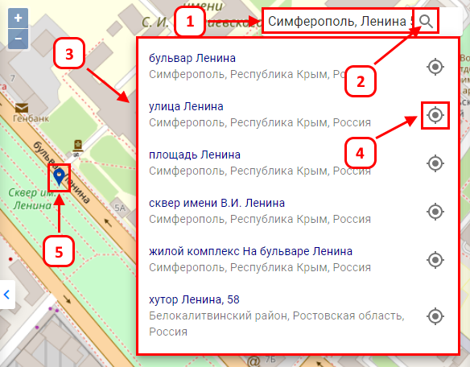

Для поиска объекта по адресу или кадастровому номеру, следует указать в окно поиска (1) полный кадастровый номер объекта или адрес в формате «Город, улица, номер дома» (Симферополь, Ленина 58), для начала поиска нажать «Enter» или значок «Лупа » (2). Далее Вам будет предложен список найденных адресов (3) или указанный вами кадастровый номер, для перехода к нужной точке, требуется нажать (4). После этого ваша точка на карте будет обозначена значком (5). Если у объекта с кадастровым номером нет координат под ним будет уведомление "Нет координат".
